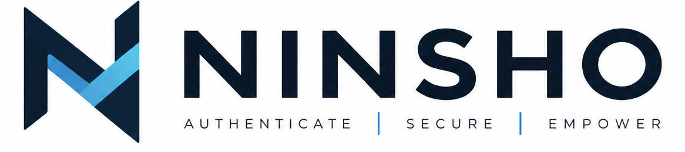

The mark
An N, and the path through it.
認証 — ninshō — is certification. A geometric N in white, cut by a blue-to-cyan band that traces a V through its centre: the request going out to the store and coming back. That round trip is the one read on every authenticated call, and it is what buys revocation that actually takes effect.
The band is the only place the identity spends colour, and it is the only part that moves. Everything else — the navy ground, the white stems — holds still.
It is deliberately not a shield, a padlock or a keyhole. Those say security-flavoured and nothing else, and every competitor already owns one.
The read it draws · docs/architecture.md — “the one read per request”
Specimens
The lockup, on both grounds.
Two files, one for each ground, because the wordmark inverts and the mark does not. The tagline sits under the word at a fixed optical size — it is part of the lockup, not a caption added to it.

On paperScale
It has to survive 16 pixels.
A favicon is the smallest place a logo ever lives and the one it is judged in most often. Four strokes and a round join is the whole budget at that size — which is why the mark has exactly that and nothing else.
Palette
One accent, two grounds.
Every value here was sampled from the artwork itself rather than matched by eye, so
the site and the logo are the same blue rather than two blues that nearly agree.
On light grounds the accent deepens to #0060D6 to hold contrast. Green is
reserved for citations and verdicts — it is semantic, not decorative, and using it
anywhere else would spend the one signal the interface has.
Using it
Four rules, and they are the short kind.
Keep clear space of one mark-width
Nothing sits closer to the lockup than the width of the icon itself. It is the only spacing rule, and it is enough.
Never redraw the N
Do not narrow the stems, round the corners, or let the band drift off the V. The geometry is the mark; the gradient is only riding on it.
Do not put the mark on a busy ground
The icon carries its own navy tile, so use that on anything textured or photographic rather than lifting the bare N onto it.
Do not recolour the band
Blue to cyan, in that direction, at that angle. It is the only colour the identity spends and the only thing that moves.
Files
One master, everything derived.
One master, and every other size box-filtered down from it. Nothing here was redrawn by hand, because a redrawn mark is a second mark — and the first attempt at one diverged from the artwork at four of six scan lines before it was thrown away.
| File | Use it for |
|---|---|
| assets/brand/ninsho-icon.png | The master, 1254 px. Everything else is derived from it |
| assets/brand/ninsho-lockup-on-dark.png | Horizontal lockup with the tagline, for dark grounds |
| assets/brand/ninsho-lockup-on-light.png | The same, for light grounds |
| assets/brand/icon-512.png | App icon, store listings, GitHub org avatar |
| assets/brand/icon-180.png | apple-touch-icon |
| assets/brand/icon-64.png | The 28 px nav mark, at 2× for retina |
| assets/brand/icon-32.png | Favicon |
| assets/brand/og-card.svg | Social preview, 1200 × 630, artwork embedded |
Take it and use it.
MIT, like the rest. If you are writing about Ninsho, the lockup and the rules above are all you need — and you do not have to ask.